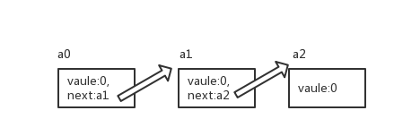
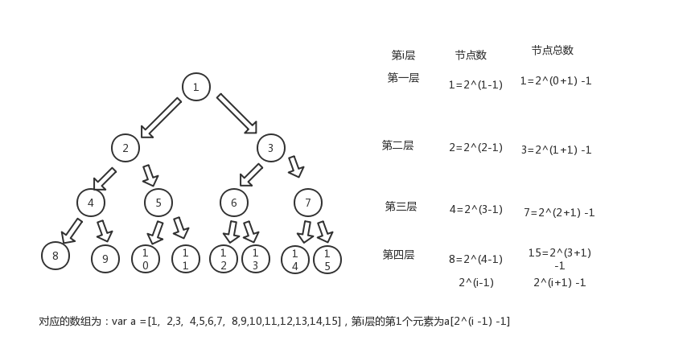

常见的数据结构包含哈希表(Hash Table)、队列(Queue)、栈(Stack)、链表(Linked List)、树(Tree)。下面进行详细介绍：
一、哈希表(Hash Table)
以伪代码举例：1
2
3
4
5
6
7
8
9
10a <- {
'0' : 0,
'1' : 2,
'2' : 1,
'3' : 56,
'4' : 3,
'5' : 67,
'6' : 3,
'length': 7
}
这个伪代码的形式可以看成是Hah模式，即key:value键值对的形式就可看作是Hash模式。例如Http请求和响应的第二部分数据就是Hash模式。数组也可以看成是hash模式。数组自带length属性。
如何使用hash呢？在计数排序中会用到。如：a <- [0,2,1,56,3,67,4,9,8]，在上一篇的博客中介绍的排序方式都需要进行比较，时间复杂度为NlogN。
此处使用计数排序来生成hash，数组a如上述代码块所定义，具体操作如下：1
2
3
4
5
6
7
8
9
10index <- 0
while (index < a['length'])
number = a[index] //0,2,1,56,3,67,3
if hash[number] == undefined
hash[number] = 1
else
hash[number] = hash[number] + 1
end
index <- index + 1
end
根据以上代码生成的hash值为：1
2
3
4
5
6
7hash <- {
'0' : 1,
'2' : 1,
'3' : 2,
'56' : 1,
'67' : 1
}
接下来我们按照顺序将生成的hash从小到大依次输出：1
2
3
4
5
6
7
8
9
10
11
12
13
14index2 <- 0
max <- findMax(a)
newArr <- []
while(index2 < max + 1)
count = hash[index2]
if count != undefined
countIndex = 0
while(countIndex < count)
newArr.push(index2)
countIndex <- countIndex + 1
end
index2 <- index2 + 1
end
print newArr
以上就是计数排序的伪代码。计数排序的时间复杂度O为n + max，比冒泡排序快很多。应用场景为对一个班级的人员年龄进行排序（此班级成员不都是同年）。这个排序方法存在两个缺点：
- 需要使用Hash作为计数排序的工具
- 无法对小数和负数进行排序
二、桶排序
桶排序和计数排序方法类似，区别在于计数排序一个桶里面之放置一个值，通排序里面的值在一个相同的取值范围内。以上个排序的数组为例，其生成的Hash值为：1
2
3
4
5
6
7hash <- {
'0' : 1,
'2' : 1,
'3' : 2,
'56' : 1,
'67' : 1
}
木桶排序生成的Hash值为：1
2
3
4
5
6
7
8
9hash <- {
'1' : [0,2,1,3,3], // 0 - 10之间的数值
'2': [], // 10 - 20之间的数值
'3': [], // 20 - 30之间的数值
'4': [], // 30 - 40之间的数值
'5': [], // 40 - 50之间的数值
'6': [56], // 50 - 60之间的数值
'7': [67] // 60 - 70之间的数值
}
到此可以对比出计数排序使用的桶较多，木桶排序则较少，但是木桶排序需要在桶内进行二次排序。
三、基数排序
此处需要明确基数是什么。比如十进制的基数是10，我们使用的数字都是十进制，所以此排序中我们使用10作为基数进行排序。需要排序的数组为[23,202,103,566,32,617,37]。10作为基数的意思是一共存在10个桶，分别为0到9，我们将需要排序的数组首先进行个位对比，各位为0的放在第一个桶中（此桶为0），依次类推，所有数组按照个位数值大小入桶，然后使用数组连接将桶内数值做出桶处理。第二步再将得到的数组的十位进行对比，按照10位数值的大小依次入桶、出桶。最终能得到整个数组从小到大的排序。排序动画。
四、队列(Queue)
队列的特点：
- 先进先出
- 可以用数组实现
- 举例：排队
例子：1
2
3
4
5
6
7var q = [];
q.push('1');
q.push('2');
q.push('3');
//此时q队列中的顺序为['1','2','3']
q.shift() //shift()为出队方法，出队的顺序是先进先出，所以此时出队的是'1'，返回'1'
q.shift() //'2'出队，返回'2'
五、栈(Stack)
- 先进后出
- 可以用数组实现
日常中常见的例子就是坐电梯，假设先上去的人都是站在最里面，那么在出电梯的时候肯定是后上去的先出去，先上去的后出去这种方式，即先进后出。
例子：1
2
3
4
5
6
7var stack = [];
stack.push('1');
stack.push('2');
stack.push('3');
//此时q队列中的顺序为['1','2','3']
stack.pop() //pop()为出栈方法，出栈的顺序是先进后出，所以此时出栈的是'3'，返回'3'
stack.pop() //'2'出栈，返回'2'
六、链表
在数组中我们删除第一个元素或者最后一个元素都很好实现，可使用shift()/pop()删除首位/末尾。但是如果我们删除中间的某一个元素如删除下标为3的内容，那么需要将后面到数组元素依次往前提，这样做会非常麻烦。所以链表出现了。
链表的结构如图所示：

其中a0的值包含value，next值指向a1，a1的next指向a2。如果我们需要删除中间元素，如删除a1，我们只需要将a0的next指向a2，即a0.netx = a2。与此同时出现了新的问题，如果我们想访问到第n个元素的话，需要使用a0.next.next.next……next。这样操作非常的复杂。
综上，数组适用于查询快速只删除头尾的情况，链表适用于查询少但是需要从中间删除的情况。
链表中的两个概念：
- head：链表中的第一个元素叫做head，如果没有head那么无法找到其他元素，如上图中的a0
- node：链表中的每一个节点，即上图中的a0,a1,a2
七、树(Tree)
只要有层级结构就能够称之为树。浏览器打开的页面可以称之为树，页面中的DOM节点也可成为DOM树。
介绍几个概念：
- 层数：根元素所在的层为第1层或者第0层，由第1层扩展来的多个分支称为第二层，其他以此类推
- 深度：一共有多少层
- 节点个数：无子节点的节点称为叶子节点
二叉树
（从第0层开始）每个节点最多只有两个分之的树结构称为二叉树。二叉树的第i层至多拥有2^i个节点，总计拥有2^(i+1)-1个节点。
满二叉树
每一层的节点都是满的。
完全二叉树
在一棵二叉树中，除最后一层外，若其余层都是满的，并且最后一层或者是满的，或者是在最右边缺少连续若干节点，则此二叉树为完全二叉树。
完全二叉树和满二叉树可以用数组实现。如完全二叉树是从上到下从左到右依次存储在数组中的，如图所示：

八、堆排序(Heap Sort)
堆是结构同于完全二叉树，有一点不同，堆的父节点的值永远大于子节点的值。
介绍两个概念：
最大堆：
- 最大堆中的最大元素值出现在根结点(堆顶)
- 堆中每个父节点的元素值都大于等于其孩子节点（如存在）
最小堆
- 最小堆中的最小元素值出现在根结点（堆顶）
- 堆中每个副节点的元素值都小于等于其孩子节点（如存在）
其他：B树、红黑树、AVL树。
—ç
附：计数排序伪代码1
2
3
4
5
6
7
8
9
10
11
12
13
14
15
16
17
18
19
20
21
22
23
24
25
26
27
28
29
30
31
32
33
34a <- { '0' : 2, '1' : 4, '2' : 6, '3' : 8, '4' : 2, '5' : 5,
'6' : 18, '7' : 57, '8' : 44, '9' : 8, 'length' : 10 }
hash <- {}
index <- 0
max <- a['0']
//将数组存入hash
while(index < a['length'])
if a[index] == undefined
hash[a[index]] <- 1
else
hash[a[index]] <- hash[a[index]] + 1
end
if a[index] > max
max <- a[index]
end
inex <- index + 1
end
//到此为止hash的值为：
//hash <- {'2' : 2, '4' : 1, '5' : 1, '6' : 1, '8' : 2, '18' : 1,
// '44' : 1, '57' : 1 }
index2 <- 0
newarr <- []
while(index2 < max + 1)
count <- hash[index2]
if count != undefined
index3 <- 0
while(index3 < len)
newarr.push(hash[index2])
index3 <- index3 + 1
end
end
index2 <- index2 + 1
end
print newarr
个人原创，转载请注明出处。